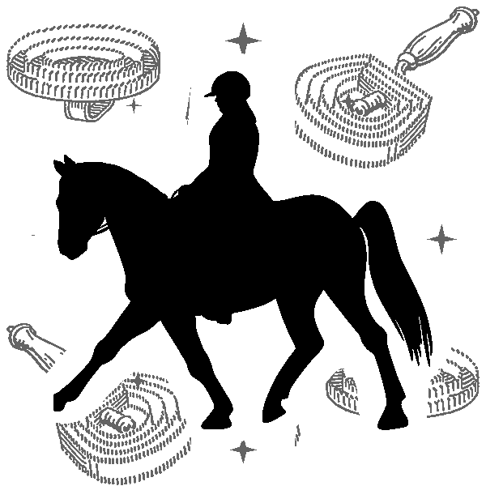

Quiet tools for loud farms.
Lavrador Modding makes focused, script-only FS25 mods that remove friction from the game: tracking, automation, UI polish. PC and Mac, singleplayer and multiplayer. Built by one developer in Portugal.
Mods
-
Horse Advisor
Sell your horses at the right time.
Install from GitHub Releases ModHub (pending approval) -

Horse Groomer
Pays a stable hand to ride and clean every horse, daily.
Install from GitHub Releases ModHub (pending approval)